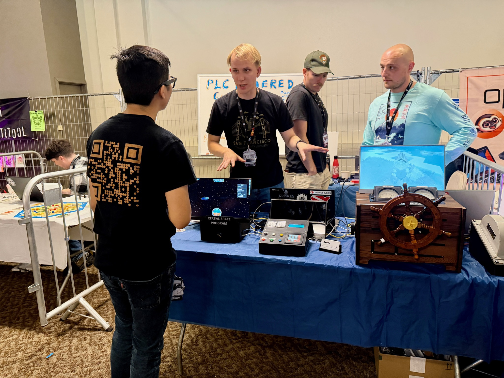
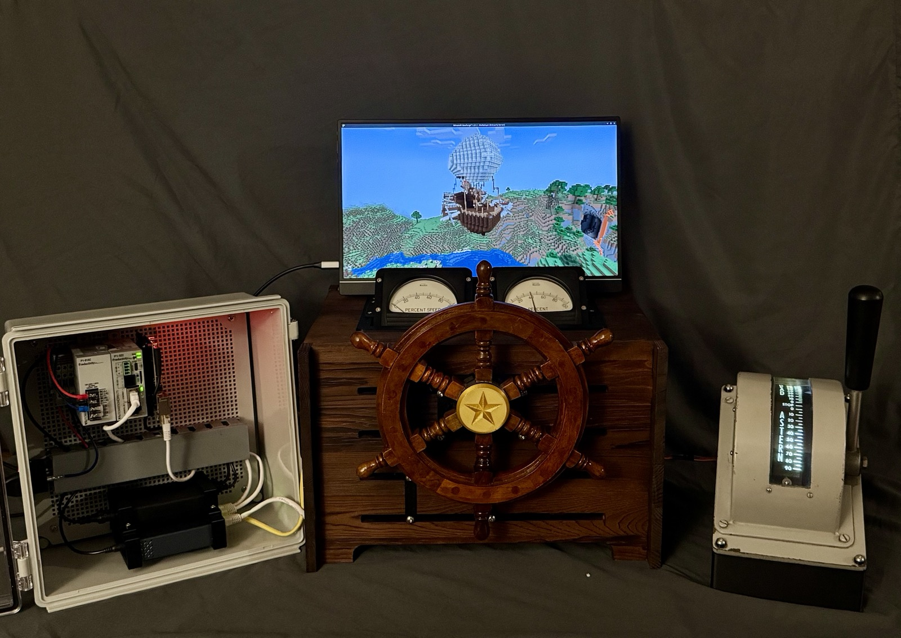

PLCGAMING.COM · Field build dossier
One AutomationDirect Productivity1000 PLC — the kind of box that runs factory lines and water treatment plants — sits at the center of a booth where video games and hand-built control panels all speak the same language: Modbus TCP. Pull a physical throttle and an airship moves in Minecraft. Press a button and a rocket launches in Kerbal Space Program. First exhibited at Open Sauce 2026.

Physical panels on the left are Modbus clients; the PLC is the one shared server in the middle. Inputs flow in, the PLC runs the control logic, and the games read the results on the right — all over the ModBus TCP Protocol.

Both of these run end-to-end on the real hardware: a physical action on a panel becomes a Modbus write, the PLC runs the control logic, the game reacts — and the game's own telemetry flows right back onto the panel's gauges. A full loop, with no keyboard in sight.
A physical throttle, steering wheel, and lift lever drive a Create-mod airship in-game through a custom CC: Tweaked Modbus mod. The airship's live altitude and speed stream back out of the game, through the PLC, and onto the HelmIO panel's own gauges.
Press the launch button on the ConsoleIO panel and the PLC flies a complete launch, ascent, and orbital-circularization sequence — up to a ~100 km orbit — through a kRPC↔Modbus bridge. Live throttle and fuel read back onto ConsoleIO's gauges the whole way up.
Everything with a green light ran live at the booth — visitors pulled the levers and pressed the buttons themselves.